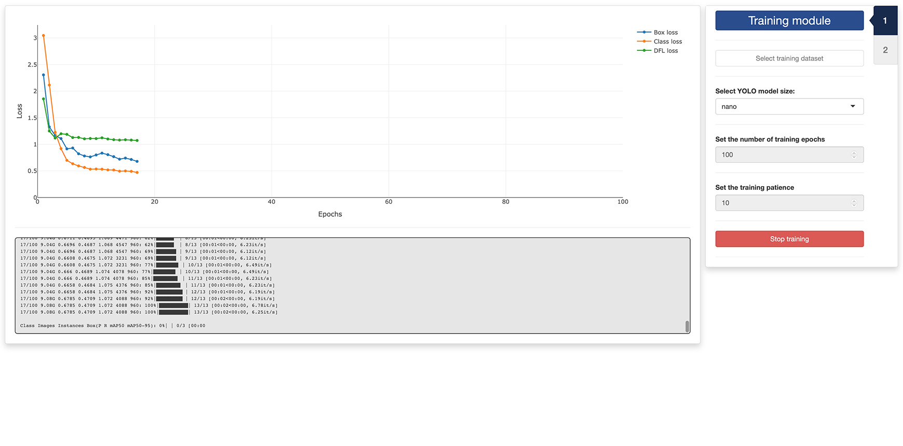

In this tutorial, we will discuss how to use the second app provided
with trackRai to train a YOLO11 model using the dataset
created in the previous
tutorial. The process is straightforward, however, it might take
some time depending on the configuration of your system. A machine with
an NVIDIA graphics card and the CUDA framework installed is highly
recommended.
3.1 - Launch the training app
To launch the training app, run the following in the R console:
This will open the app either in the viewer panel of RStudio and
Positron, or in your default internet browser. You can control where the
app is opened using the launch.browser parameter (see the
documentation of shiny::runApp() for more information).
3.2 - Tab 1: training module
Once the app opens, you will be presented with the “Training” tab.
Click on the Select training dataset button and navigate to
a folder containing a YOLO dataset (it should a folder named
YOLO). Select this folder.
Then, select a model size. Smaller models take less time and memory to train, larger models may yield better results for complex arrangements of objects. We find that the smaller (“nano”) model size does a really good job in most situations.
Finally, you can set the maximum number of training epochs you would like to run and the “patience” of the training process. This last paramater allows the training to stop automatically if the training performance does not improve after a set number of epochs. This helps prevent overfitting by stopping training when performance plateaus; it also saves computing time. If you do not want training to stop early, set the patience to the maximum number of epochs.

After setting all the training parameters, click the
Start training button and wait until it completes.
Performance metrics will be displayed in the graph on the left of the
window, and in the log panel below the graph.
Once the training has completed successfully, the second tab of the app will become available and you can click on it to navigate there.
3.3 - Tab 2: checking module
In the second tab of the training app, you can check the quality of the training and the effect of the inference paramaters on the detection of the objects of interest in a video.
First, you need to select a video by clicking the
Select video button. You can also select an optional mask
by clicking the Select mask (optional) button. This will
load the video in the app and you can navigate it using the slider under
the display panel. Detected objects will be automatically enclosed in a
green rectangle.
You can check the effect of the following paramters on the quality of the object detection:
- Minimum confidence threshold: the minimum confidence threshold for detections. Objects detected with confidence below this threshold will be disregarded. Adjusting this value can help reduce false positives.
- Intersection over union threshold: threshold for non-maximum suppression. Lower values result in fewer detections by eliminating overlapping boxes, which can be useful for reducing duplicates.
- Maximum number of objects to detect: Maximum number of detections allowed per frame. Limits the total number of objects the model can detect in a single inference, preventing excessive outputs in dense scenes.
If you are not satisfied with the detection results, you can return to the first tab and increase the number of training epochs and the patience of the training, or select a larger model size, before running another round of training.
If you are satisfied with the results, you are done and you can close the app. The next step will be using the trained model to track objects in a video.